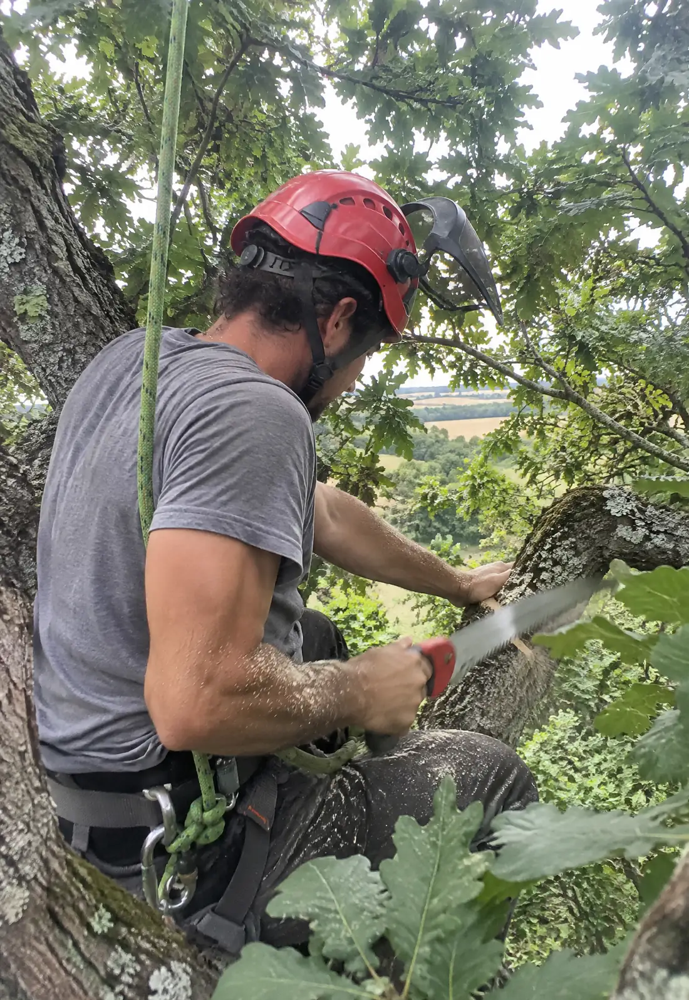
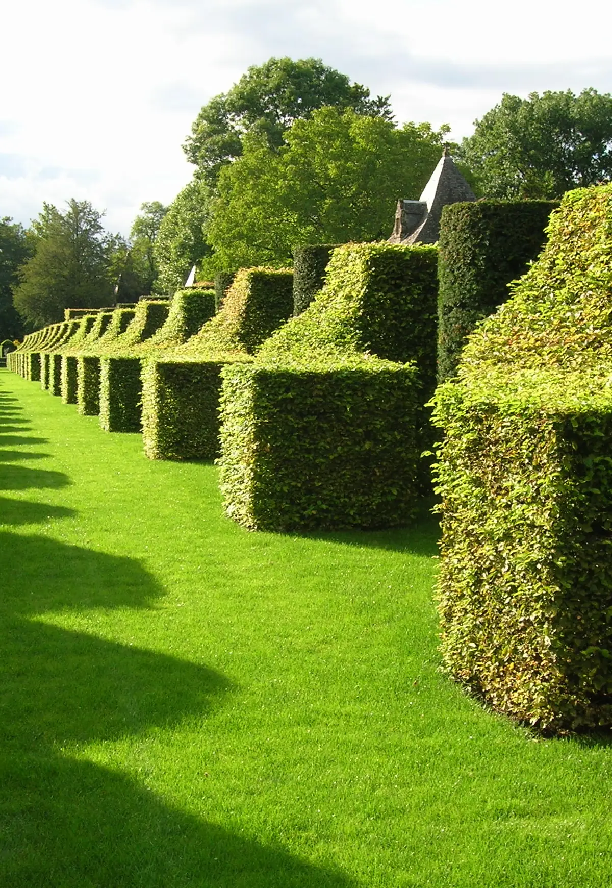
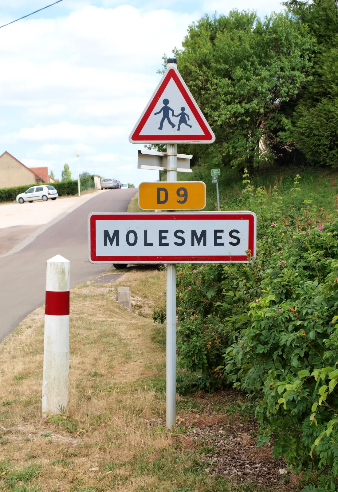
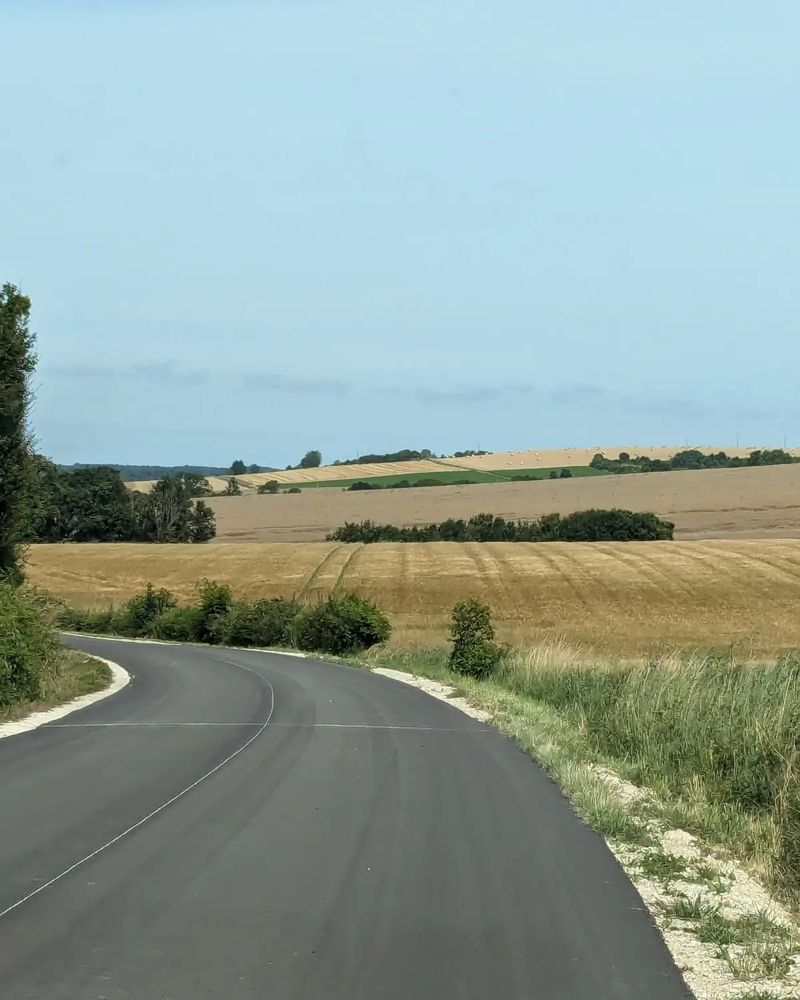

PaysagisteÉlagueurMolesmes, Yonne
NoahLoustaunau
Couper ce qu’il faut. Laisser pousser le reste.
Paysagiste et élagueur à Molesmes, aux Hauts de Forterre, dans l’Yonne. Les arbres là-haut, le jardin en bas.
Les branches marquées à l’orange sont de trop : touchez-les.
Le métier
Un métier,
deux visages.
En juillet 2026, Noah Loustaunau a repris une partie d’une activité de paysagiste et d’élagage à Molesmes, dans l’Yonne, et un service d’aménagement paysager à Lainsecq.
Là-haut
Élagage
Défilez : la scie avance.

Le détail, c’est Noah qui l’écrit
Un arbre à tailler ?Touchez un cerne.
La reprise
Un nouveau cerne
Les arbres restent. Le nom change.
En bas
Paysage
Service d’aménagement paysager, à la mesure de chez vous. La haie, l’allée, le jardin entier.
Ce que Noah propose exactement

Cette haie a poussé. Passez la souris dessusPassez le doigt dessus : taillez-la au cordeau.
Le plan
Dessinez votre jardin
Tondez la pelouse en bandes, puis posez un arbre, une haie, des arbustes, une allée. Le plan part avec votre demande de devis.
Pelouse tondue : 0 %
Sur votre plan : rien pour l’instant.
Toute l’année
Les saisons du chantier
Choisissez une saison : tout le site change de feuillage.
Ce qui se fait à chaque saison, c’est Noah qui l’écrira.
Le secteur
Ici
Molesmes et Lainsecq, sur les hauteurs de la Forterre. Le reste du secteur, c’est Noah qui l’écrira.


Devis
Un arbre à tailler ?
Un jardin à dessiner ?
Votre numéro, votre secteur et vos horaires s’écrivent ici, avec vos vrais mots.
Votre site
Autant de pages que vous voulez.
Cette maquette tient sur une seule page, pour donner l’idée. Une page par chantier, une pour l’élagage, une pour les jardins, une pour vos photos avant et après : c’est vous qui voyez.
Une bûche, une page.